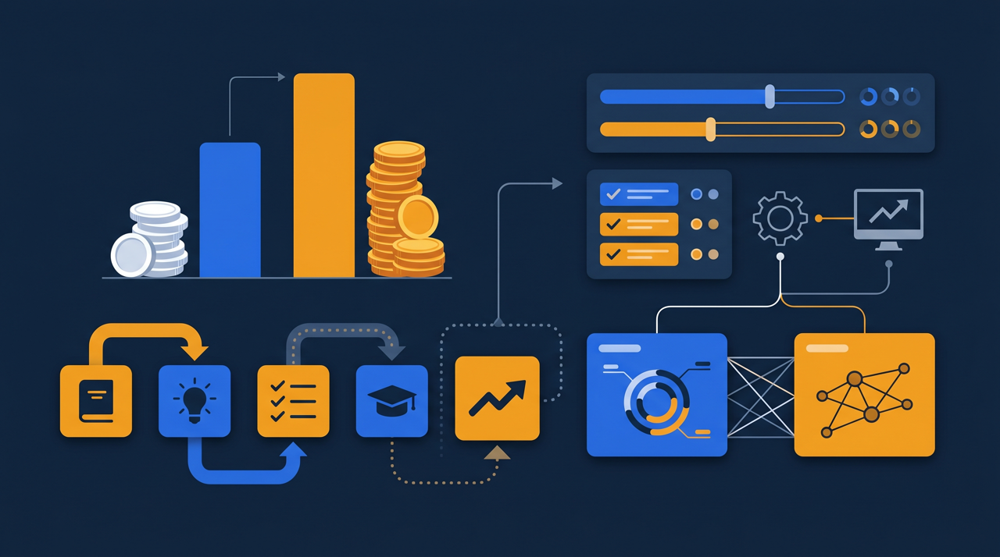
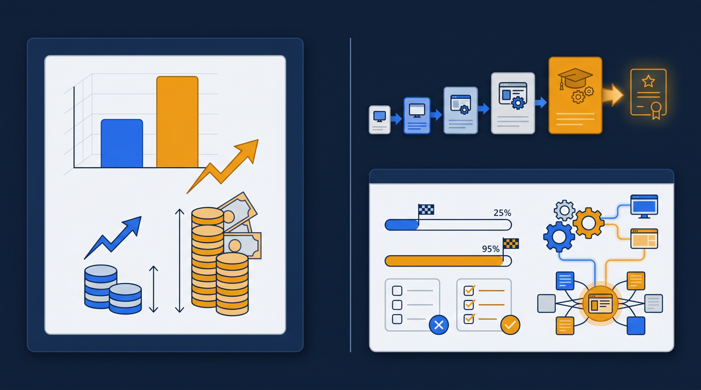
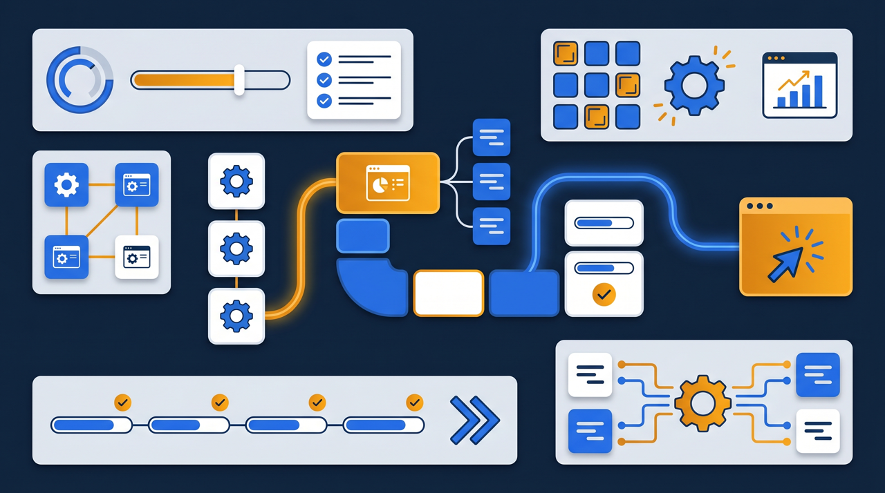

「研修にいくらかかっているか、正確に答えられますか?」——こう聞かれて、すぐに金額が出てくる会社は意外と多くありません。会場を借りて、講師を呼んで、テキストを刷って……と、目に見える費用だけ数えても、それは氷山の一角です。本当のコストは、もっと見えにくいところに隠れています。この記事では、研修コストの中身を一度ばらして整理し、eラーニング化でどこをどれだけ抑えられるのか、費用対効果の考え方を実務目線でお伝えします。

研修コストとは？まず費用の中身を分解する
研修コストの削減を考える前に、まずやっておきたいのが、「何にいくらかかっているか」を分解することです。ここが曖昧なまま「安くしたい」と言っても、どこを削ればいいか見えてきません。
研修にかかる費用は、大きく二つに分けられます。一つは、目に見える直接費用。会場費、講師への謝礼、テキストや教材の印刷代などです。請求書として手元に残るので、把握しやすい部分ですね。もう一つが、見えにくい間接費用。これがやっかいなんです。
たとえば、社員10人が1日研修を受けたとします。その日、その10人は本来の仕事ができていません。これは「機会費用」と呼ばれる、目に見えないコストです。さらに、会場までの移動時間、交通費、研修を企画して案内を出し、出欠を取りまとめる担当者の工数も、すべてコストに含まれます。請求書には載らないけれど、確実に発生している費用です。
つまり、研修コストの実態は、請求書の金額だけを見ていては正しくつかめません。「人の時間」というコストまで含めて捉えると、研修は思っているよりずっと高い買い物だと分かってきます。コスト削減の第一歩は、この見えにくい部分まで含めて、全体像を把握することなんですよね。
集合研修のコストは「回数」に比例して膨らむ
費用の中身が見えてきたところで、集合研修ならではの特徴を押さえておきましょう。集合研修の費用には、ある構造的な特徴があります。それは、実施するたびに、ほぼ同じ費用がまるごと発生するという点です。
新人研修を例に考えてみます。今年20人に研修をしたとして、来年また20人入ってくれば、会場も講師もテキストも、もう一度ゼロから手配することになります。同じ内容を教えるのに、毎年同じだけの費用がかかる。回数を重ねても、1回あたりのコストはほとんど下がりません。むしろ、人数が増えれば会場を大きくする必要が出て、費用は増えていきます。
- 実施のたびに会場費・講師費・交通費がまるごと発生する
- 受講者が同じ時間に拘束され、その分の機会費用が積み上がる
- 拠点が離れていると、移動時間と交通費がさらに重くなる
- 日程が合わず複数回に分けると、その回数だけ費用が増える
- 内容を毎回同じように再現するための準備工数が、毎回かかる
特に響いてくるのが、日程調整に伴う「複数回開催」です。全員の予定が一度に合うことはまずないので、同じ研修を2回、3回と分けて開くことになります。そのたびに講師を拘束し、会場を押さえる。1回で済むはずの教育が、回数分のコストに膨らんでいくわけです。ある製造業の会社では、安全教育を全交代勤務者に行き渡らせるため、同じ内容を年に5回開いていました。中身は毎回同じなのに、費用は5倍かかっていた、という話です。
ここで見えてくるのが、集合研修のコスト構造の本質です。「教える内容は同じなのに、教えるたびに費用が発生する」。この繰り返しの部分こそ、削減の余地が大きいところなんです。
もう少し具体的に、機会費用の重さも考えてみましょう。仮に時給換算で2,000円の社員が20人、1日(8時間)研修を受けると、それだけで人件費は32万円分の働く時間が失われている計算になります。これは会場費や講師費とは別に、確実に発生しているコストです。請求書には出てこないので見落とされがちですが、実は研修コストの中でいちばん大きな塊になっていることも珍しくありません。「研修は会場費が高い」と思っていたら、本当に重かったのは人の時間だった、というのはよくある話なんですよね。だからこそ、コストを考えるときは、お金の費用だけでなく、拘束される時間まで含めて見ることが欠かせません。
eラーニング化で、どの費用が下がるのか
では、eラーニングにすると何が変わるのか。鍵になるのは、「一度作れば、何度でも使える」という点です。集合研修が回数に比例して費用が膨らむのに対し、eラーニングは作った教材を繰り返し使えるので、使うほど1回あたりのコストが下がっていきます。
具体的に、どの費用が下がりやすいかを集合研修と並べて見てみましょう。
| 費用の種類 | 集合研修 | eラーニング |
|---|---|---|
| 会場費 | 実施のたびに発生 | ほぼ不要になる |
| 講師費 | 実施のたびに発生 | 教材化すれば繰り返し費用が抑えやすい |
| 交通費・移動時間 | 拠点が離れるほど重い | 各自の場所で受講でき抑えやすい |
| 機会費用 | まとまった時間を拘束 | 業務の合間に分けて受講しやすい |
| 教材費 | 印刷・配布が都度発生 | 一度作れば差し替え更新で済む |
この表から見えてくるのは、eラーニングが下げやすいのは「繰り返し発生していた費用」だということです。会場費、講師費、交通費——集合研修だと毎回かかっていたこれらの費用が、教材を作ってしまえば、何度使ってもほとんど増えません。
さらに見落とされがちなのが、機会費用への効きです。eラーニングなら、まとまった1日を空けなくても、業務の合間に少しずつ受講できます。先ほどの製造業の例なら、交代勤務の合間に各自が動画を見て学べるので、全員を5回に分けて集める必要がなくなる。教える側の講師の拘束も、受ける側の時間の拘束も、両方を軽くできるわけです。
「初期費用が高い」をどう考えるか
ここで、よく聞かれる疑問に触れておきます。「eラーニングは教材作成やシステム導入に初期費用がかかるから、かえって高くつくのでは?」という声です。これはもっともな問いなので、構造で考えてみましょう。
確かに、eラーニングには最初に費用がかかります。教材を作る手間、システムを用意する費用などです。一方の集合研修は、初期費用はほとんどかからない代わりに、実施のたびに費用が発生し続けます。つまり、両者は費用のかかり方の「形」が違うんです。
eラーニングは、最初にまとまった費用がかかるけれど、その後は使うほど1回あたりが安くなっていく。集合研修は、最初は軽いけれど、実施するたびに一定の費用が積み上がっていく。だから、受講する人数が多いほど、実施する回数が多いほど、eラーニングのほうが長い目で見て1人あたりのコストが下がりやすい構造になります。

逆に言えば、年に1回しかやらない、受講者もごく少数、という研修なら、無理にeラーニング化してもコスト面のメリットは出にくいこともあります。「繰り返し行う研修」「多人数・多拠点の研修」ほど、eラーニング化の費用対効果が大きくなる。自社のどの研修がそれに当てはまるかを見極めることが、賢い削減につながります。厚生労働省の能力開発基本調査でも、企業の教育訓練費用は調査ごとに把握されていますが、自社の費用が「繰り返しの集合研修」に偏っていないかを確認してみる価値はあります。
コストを「削る」のではなく「使い分ける」

ここまでeラーニングのコスト面の利点を見てきましたが、注意したいことがあります。コストを下げたいあまり、すべての研修をeラーニングに置き換えようとすると、かえって効果を損なうことがあるんです。
研修には、eラーニングが向いている部分と、対面が向いている部分があります。知識のインプットや、繰り返し説明する基本的な内容は、eラーニングが得意です。何度でも見返せますし、各自のペースで進められる。一方、ロールプレイや、その場の議論を通じて気づきを得るような学びは、対面のほうが向いています。
- 知識のインプット・基本動作・繰り返しの説明 → eラーニングが向く
- ロールプレイ・双方向の議論・その場のフィードバック → 対面が向く
- 全体の流れや動作を見せる部分 → 動画が向く
- 個別の事情に合わせた指導 → 対面で時間を確保する
ここで効いてくるのが、「組み合わせる」という発想です。たとえば、知識の部分は事前にeラーニングで学んでおいてもらい、対面の時間は議論や実践だけに使う。すると、対面の時間を短くできるので、会場費も拘束時間も減らせます。eラーニングで土台を作り、対面で仕上げる。この役割分担ができると、コストを下げながら効果はむしろ上げられることがあるんです。
ある小売業では、接客の基礎知識をeラーニングに移し、集合研修は実際のロールプレイだけに絞りました。すると、集合研修の時間が半分になり、会場の拘束も減った。それでいて、参加者は事前に知識を持って臨むので、ロールプレイの中身が濃くなった。コストを削るだけでなく、限られた対面の時間の質まで上がったわけです。費用対効果という言葉の本当の意味は、こういうところにあるのかもしれません。
削減効果をどう測り、何を残すか
最後に、コスト削減を「やりっぱなし」にしないための視点です。削減したつもりでも、効果が下がっていては意味がありません。費用と効果の両面を見ておくことが大切です。
費用の面では、導入前後で、研修の実施回数・受講人数・1回あたりの会場費や講師費・移動時間などを比べると、削減の効果が見えてきます。「年5回の集合研修が1回になった」「移動時間が全社で何時間減った」というように、数字で押さえておくと、投資の判断もしやすくなります。
効果の面では、受講率や理解度も見ておきたいところです。eラーニングは、放っておくと見られないまま終わることもあります。誰がどこまで学んだかを記録し、確認テストで理解度を測れる状態にしておくと、「安くなったけれど学ばれていない」という事態を防げます。学習管理システム(LMS)に教材と記録を集約しておくと、この費用と効果の両面を、まとめて把握しやすくなります。
そしてもう一つ、費用面で覚えておきたいことがあります。研修のオンライン化や教材作成には、人材開発支援助成金のように、訓練にかかった経費や賃金の一部を国が助成する制度を活用できる場合があるという点です。対象になるかは訓練の形式や手続きの要件によって変わりますが、自社の負担を直接的に軽くできる可能性があります。削減と助成、両面から研修費を見直してみる価値はあるでしょう。
まとめ：見えない費用を捉え、繰り返しを資産に変える
研修コストの削減は、「会場を安くする」「講師の謝礼を値切る」といった目に見える費用の話に留まりがちです。けれど本当のコストは、受講者の時間や移動、運営の工数といった、見えにくいところに大きく隠れています。まずはこの全体像を分解して把握することが、出発点になります。
集合研修は、教える内容が同じでも、実施するたびに費用がまるごと発生する構造を持っています。この「繰り返しの部分」こそ、eラーニング化で抑えられる余地が大きいところです。一度作った教材を繰り返し使えるため、受講人数や回数が多いほど、1人あたりのコストは下がっていきます。
ただし、すべてを置き換えるのではなく、内容に応じて使い分けることが肝心です。知識はeラーニングで、実践は対面で。組み合わせることで、コストを下げながら効果はむしろ高められることがあります。そして、削減効果と学習効果の両面を記録で押さえ、活用できる助成制度も視野に入れる。まずは「毎年・繰り返し行っている研修」を1つ選び、その費用を分解してみるところから、コストの見直しを始めてみてください。
よくある質問
会場費・講師費・テキスト代といった目に見える費用のほかに、受講者がその時間に働けないことによる人件費（機会費用）や、移動の交通費・時間、研修を企画・運営する担当者の工数なども含まれます。見えにくい費用まで含めて捉えると、実際のコストはかなり大きくなることが多いです。
繰り返し発生する会場費・講師費・交通費を抑えやすくなる傾向があります。一度作った動画やコースを何度でも使えるため、回数を重ねるほど1回あたりのコストが下がっていく点が、集合研修との大きな違いです。
確かに、教材作成やシステム導入には初期の費用がかかります。ただ、集合研修は実施のたびに費用が発生するのに対し、eラーニングは作った教材を繰り返し使えるため、受講人数や実施回数が多いほど、長い目で見て1人あたりのコストが下がりやすい構造になっています。
すべてを置き換える必要はありません。知識のインプットや繰り返し説明する部分はeラーニングが向いており、ロールプレイや双方向の議論は対面が向いています。費用だけで決めず、内容に応じて使い分けるほうが、結果として効果とコストの両立につながりやすいです。
実施回数・受講人数・1回あたりの会場費や講師費・移動時間などを、導入前後で比べると把握しやすくなります。あわせて、受講率や理解度といった効果の面も見ておくと、単なる費用削減ではなく費用対効果として評価できます。
訓練の内容や進め方によっては、人材開発支援助成金のように、訓練にかかった経費や賃金の一部を国が助成する制度を活用できる場合があります。対象になるかは訓練の形式や手続きの要件によって変わるため、詳細は厚生労働省の公式情報や窓口でご確認ください。